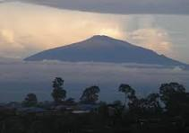
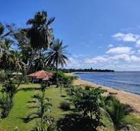
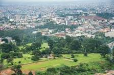

Afrique Centrale

Plus haut sommet d'Afrique centtale

Sable blanc,eaux turquoise et la majestueuse chute de la lobé qui se jette directement dans l'océan

La capitale verdoyante du cameroun avec ses musées,marchés animés,la basilique Marie-Reine-Des-Apôtres
Le palais de Foumban est le siège ancestral du sultanat des Bamouns, l'un des royaumes les plus puissants et fascinants d'Aftrique centrale.
Fondé au XIVe siècle ce palais est un témoignage vivant d'une grande civilisation qui a developpé sa propre écriture.